Actual Chrome renders at 773 × 601. Before: product baseline fc61033, unchanged through bd43b44. After: the office refinement. Explicit Milan demo; real Wikipedia place names. No image reconstruction. Browser evidence does not establish physical Tesla acceptance.
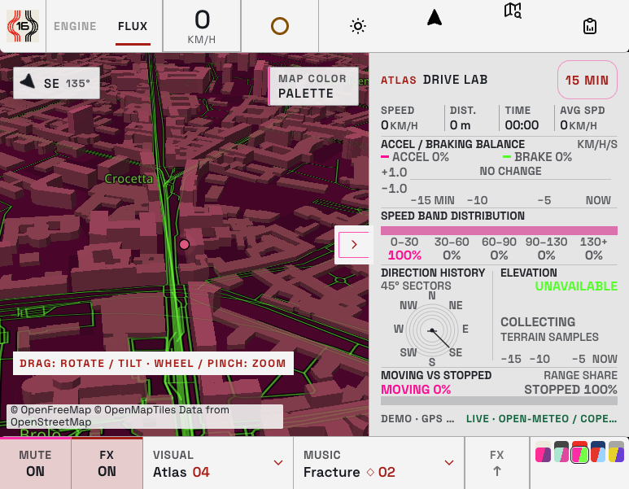
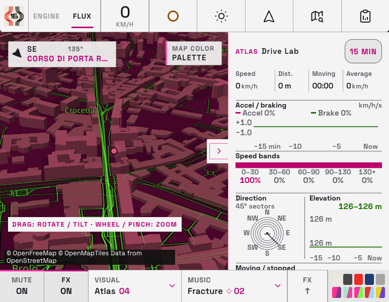
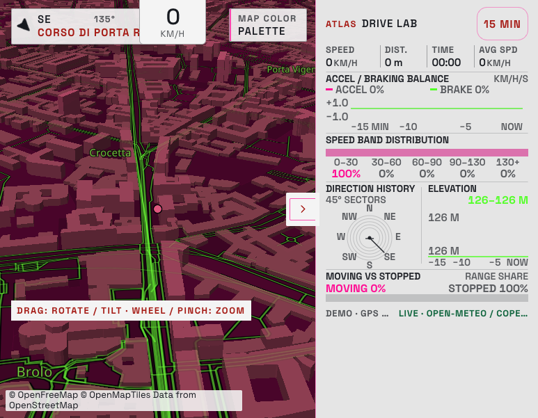
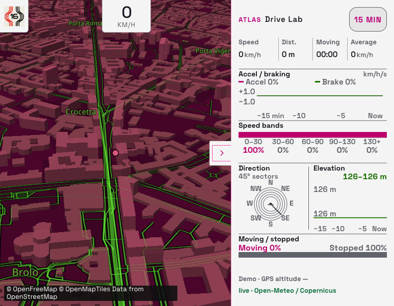
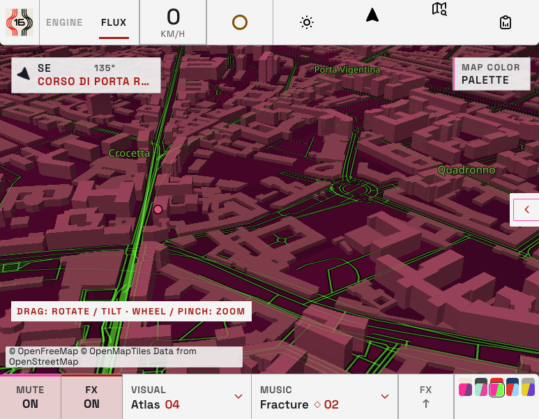
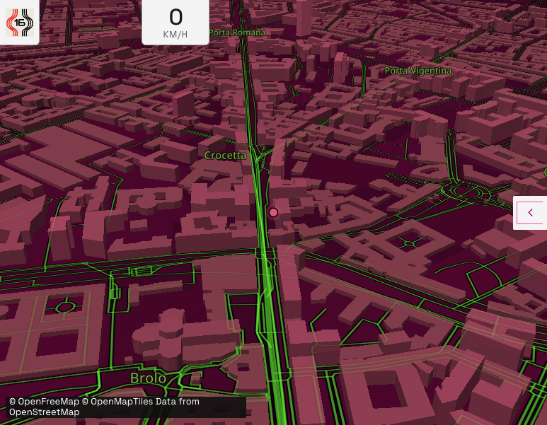
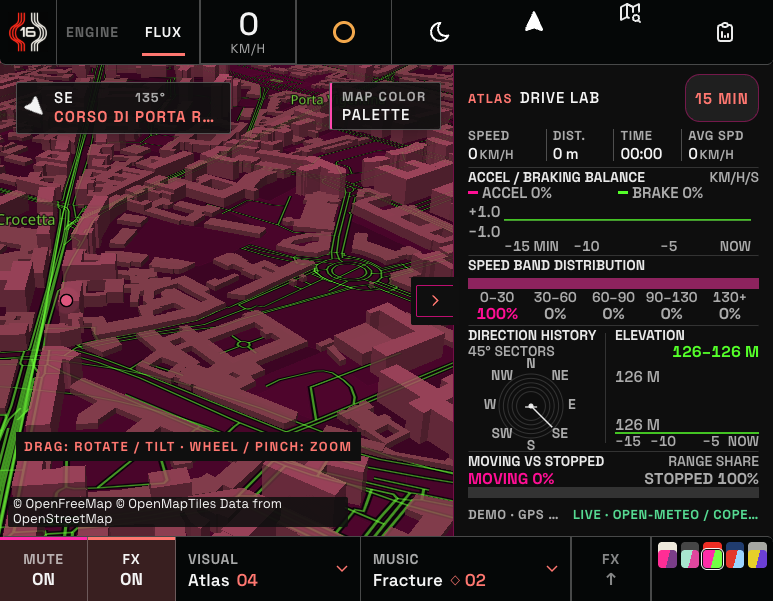
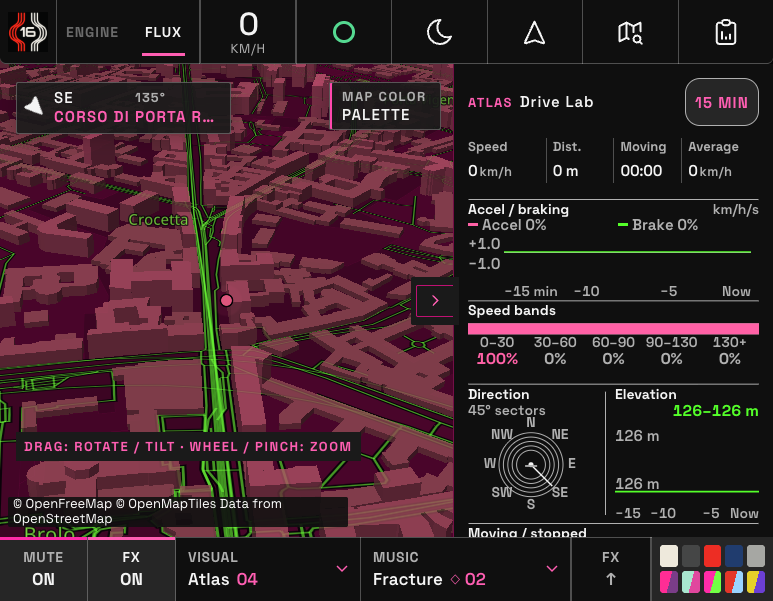
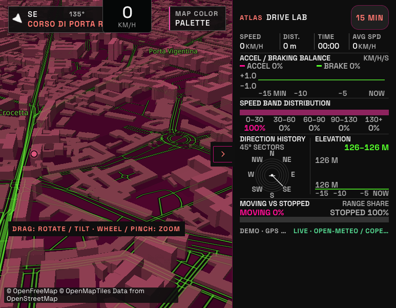
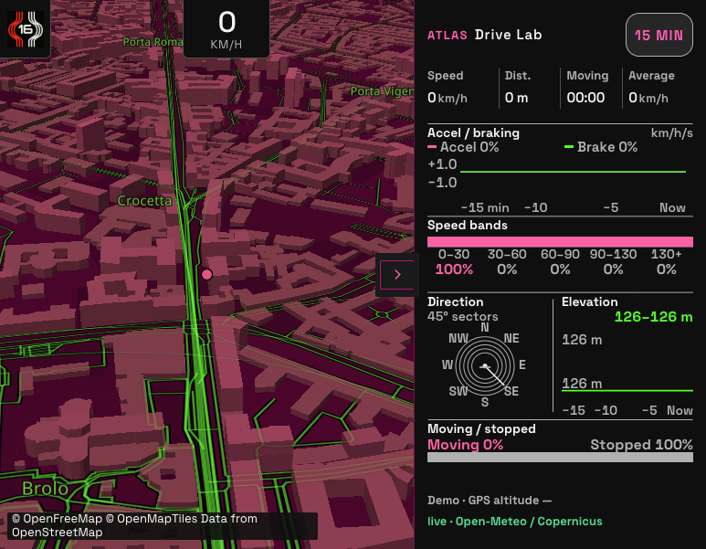
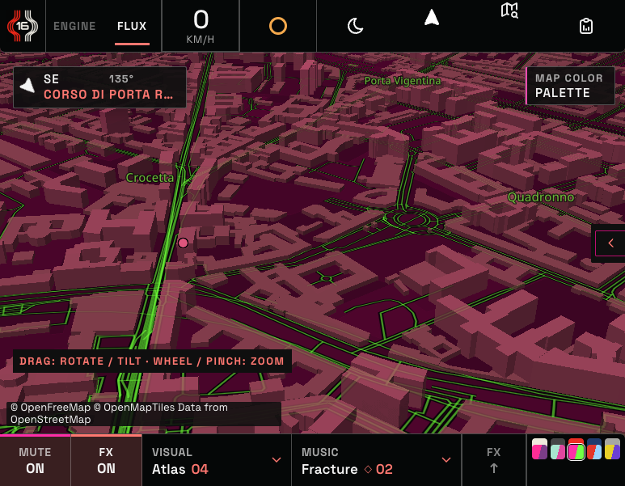
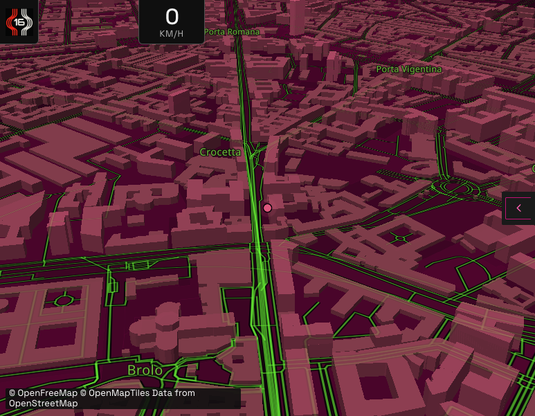
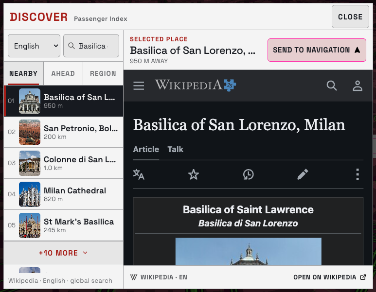
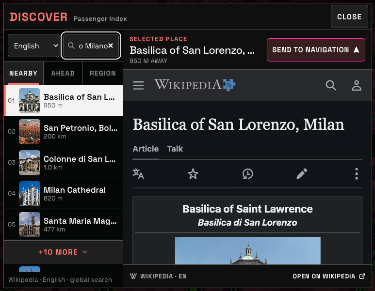
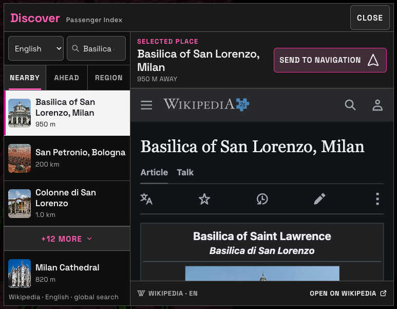
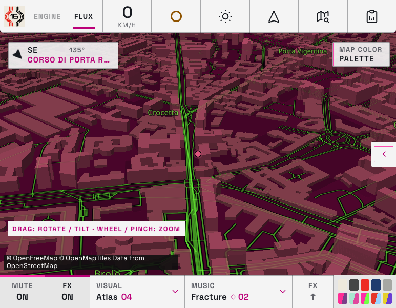
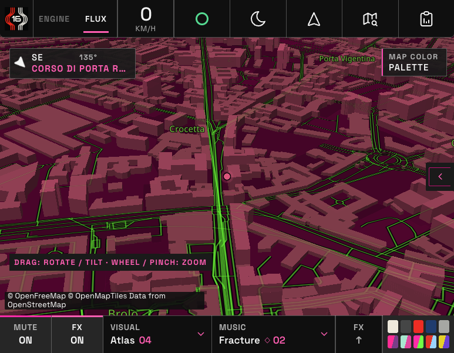
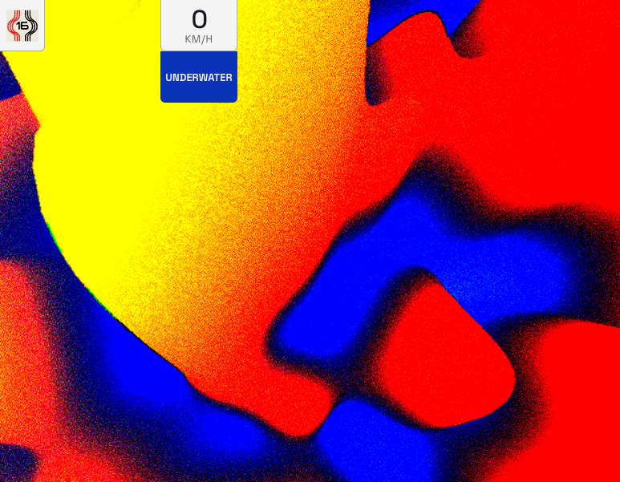
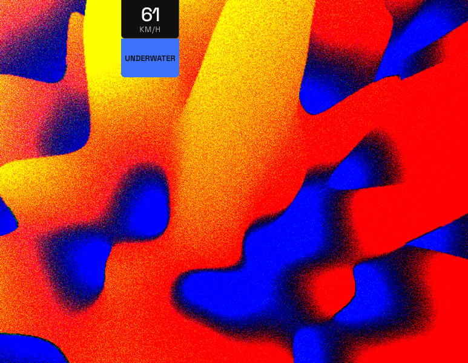
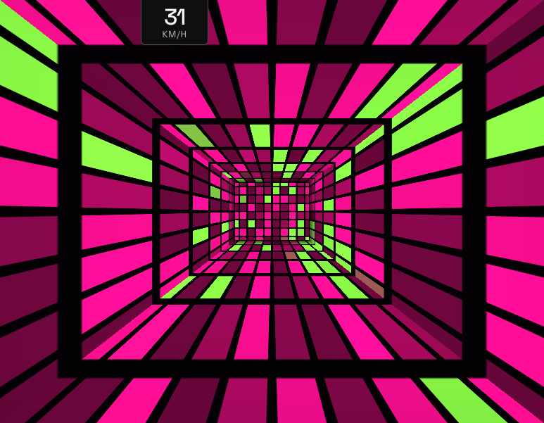